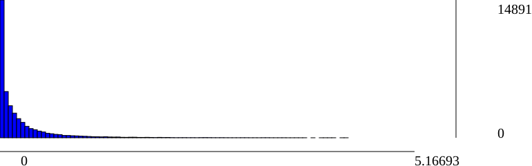

SFM report.
Dataset info:
#views: 56
#poses: 23
#intrinsics: 1
#tracks: 8076
#residuals: 19308
Track length statistics:
| IdView | Basename | #Observations | Residuals min | Residuals median | Residuals mean | Residuals max |
| 0 | image000000 |
| 1 | image000001 |
| 2 | image000002 |
| 3 | image000003 | 73 | 6.99084e-05 | 0.448114 | 0.737615 | 4.18009 |
| 4 | image000004 |
| 5 | image000005 | 294 | 3.1367e-05 | 0.0907331 | 0.250567 | 3.26421 |
| 6 | image000006 | 184 | 0.000122068 | 0.294448 | 0.561253 | 4.26795 |
| 7 | image000007 |
| 8 | image000008 |
| 9 | image000009 |
| 10 | image000010 |
| 11 | image000011 |
| 12 | image000012 |
| 13 | image000013 |
| 14 | image000014 |
| 15 | image000015 | 142 | 0.00136558 | 0.353288 | 0.528114 | 3.35086 |
| 16 | image000016 | 245 | 0.000179591 | 0.392798 | 0.656445 | 5.16693 |
| 17 | image000017 | 348 | 1.36257e-05 | 0.079417 | 0.228935 | 3.69176 |
| 18 | image000018 | 163 | 0.00180791 | 0.423369 | 0.59436 | 3.40626 |
| 19 | image000019 |
| 20 | image000020 | 181 | 0.000168478 | 0.32894 | 0.590276 | 3.58595 |
| 21 | image000021 |
| 22 | image000022 |
| 23 | image000023 | 1272 | 1.16481e-05 | 0.0801027 | 0.299294 | 4.2936 |
| 24 | image000024 | 898 | 1.24918e-05 | 0.0954601 | 0.247895 | 3.33471 |
| 25 | image000025 | 735 | 0.000278223 | 0.122201 | 0.285304 | 3.91917 |
| 26 | image000026 | 376 | 0.000164306 | 0.265878 | 0.507074 | 4.09503 |
| 27 | image000027 | 80 | 1.30731e-05 | 0.174655 | 0.356239 | 2.08094 |
| 28 | image000028 |
| 29 | image000029 |
| 30 | image000030 | 2756 | 7.08699e-06 | 0.0612549 | 0.135726 | 3.31228 |
| 31 | image000031 | 1655 | 2.9161e-05 | 0.15552 | 0.256342 | 3.14562 |
| 32 | image000032 |
| 33 | image000033 |
| 34 | image000034 |
| 35 | image000035 |
| 36 | image000036 | 80 | 9.37033e-05 | 0.259391 | 0.45436 | 2.46977 |
| 37 | image000037 | 1998 | 2.22608e-05 | 0.0886852 | 0.204635 | 3.98432 |
| 38 | image000038 | 623 | 2.69042e-05 | 0.122065 | 0.460036 | 3.78753 |
| 39 | image000039 | 2191 | 6.33624e-06 | 0.0770242 | 0.164203 | 3.38816 |
| 40 | image000040 | 176 | 0.000102076 | 0.1527 | 0.307591 | 2.58109 |
| 41 | image000041 |
| 42 | image000042 |
| 43 | image000043 |
| 44 | image000044 |
| 45 | image000045 |
| 46 | image000046 | 37 | 0.00301105 | 0.26799 | 0.444716 | 1.98844 |
| 47 | image000047 | 1462 | 4.55284e-05 | 0.182082 | 0.301444 | 3.6369 |
| 48 | image000048 | 3339 | 1.67911e-06 | 0.0545765 | 0.119561 | 3.76359 |
| 49 | image000049 |
| 50 | image000050 |
| 51 | image000051 |
| 52 | image000052 |
| 53 | image000053 |
| 54 | image000054 |
| 55 | image000055 |
SfM Scene RMSE: 0.44875
Residuals histogram
